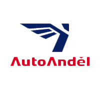

Opravy automobilu
Komplexní opravy motorových vozidel od běžné údržby po náročnější zásahy.
Ústí nad Labem · Božtěšice
Komplexní opravy motorových vozidel, diagnostika a běžný autoservis v Ústí nad Labem.
Informace o servisu
Jsme firma, zabývající se komplexní opravou motorových vozidel. Naším heslem je kvalitně provedená práce za dobrou cenu a spokojený zákazník.
Služby
Poskytujeme běžné služby autoservisu. Příklady práce a specializace najdete níže.
Komplexní opravy motorových vozidel od běžné údržby po náročnější zásahy.
Opravy a výměny poničených plechů, plastů a světel.
Výměny brzd a další běžné opravy spojené s bezpečným provozem auta.
Opravy motorů včetně generálek podle stavu a rozsahu závady.
Opravy výfuků a reznoucích částí automobilu.
Diagnostika vozidel VW, Škoda, SEAT a Audi pomocí VAGProg 2009, k dispozici je také ATAL.
Opravy automobilu
V našem autoservisu poskytujeme komplexní opravy motorových vozidel. Ať už se jedná o opravy exteriéru, opravu či výměnu poničených plechů a plastů, výměnu světel, výměnu brzd, opravy a generálky motorů nebo další běžné opravy.
Mezi naše služby patří také sváření, takže není problém opravit výfuk či reznoucí části automobilu.
Diagnostika auta
VAGProg 2009 používáme pro zjištění závad na opravovaném automobilu u vozidel koncernu VW, Škoda, SEAT a Audi.
Druhým programem, který máme k dispozici, je program ATAL.
Ceník služeb
Dodavatel náhradních dílů

Spolupráce a Facebook
Spolupracujeme s dovozcem autodílů Auto Anděl.
Kontakt
Pokud u nás necháte svůj vůz, nemusíte mít strach. Několik metrů od nás je autobusová zastávka, ze které se pohodlně dostanete například do centra města.
směr centrum města: Divadlo, Mírové náměstí, Hlavní nádraží ČD
směr Všebořice s navazujícím spojem do centra města